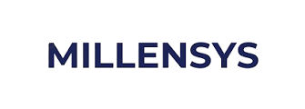

Millensys — Healthcare IT Solutions
Junior AI & Machine Learning Engineer specializing in deep learning, computer vision, transfer learning, and predictive modeling. Proven track record designing and deploying AI systems using PyTorch, TensorFlow, OpenCV, and scikit-learn for medical imaging, real-time video analytics, signal classification, and forecasting applications. Architected end-to-end machine learning pipelines, YOLO-based detection systems, CNN/GRU architectures, and interactive AI-powered software platforms. Successfully delivered high-impact outcomes through research projects and hackathons, applying model optimization, explainability techniques, and full-stack deployment frameworks to solve complex, real-world problems.
ColumnTransformer and SMOTE within an imblearn cross-validation framework.